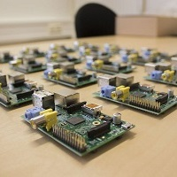
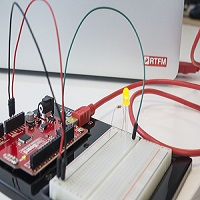

Oculus Rift
Har du noen gang prøvd en Oculus Rift? Hvis ikke er dette sjansen din! Hackerspace har to stykker tilgjengelig for utprøving og leking.
Raspberry Pi
Har du noen gang ønsket å sette opp ditt eget mediasenter, lage en værstasjon eller lage et automatisert system? Da kan du komme og prøve ut hva Raspberry Pi kan brukes til!
Arduino
Har du noen gang ønsket å lage en duppedings som reagerer på lyd eller lys? Eller en DAB-radio? Da kan du komme og leke med Arduino, samt kule tilleggskomponenter!